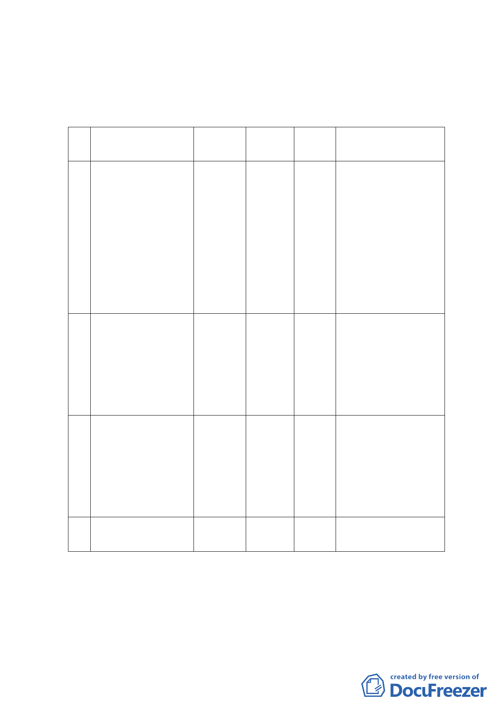

地，面積約 0.81 公頃。土地權屬為臺北市及中華民國。）
四、變更主要計畫內容：
(一)土地使用分區：
編
位置
號
原計畫
面積
新計畫
(公頃)
變更理由
北 安 段 四 小 段 205-6 、
205-7 、 236 、 239 、
241-1、241-2、243-1、
244 、 244-1 、 245-2 、
1 245-4、246-2、248-1、 行政區
248-2、282-10、285、
208-2 、 225 、 226 、
228-1、229、230、232、
231、286 地號，共25 筆
北 安 段 四 小 段 234 、
235、237、238、240、
289-1、207-3、205-13、
2 道路用地
206-3 、 233 、 242-1 、
231-1、231-2 地號，共
13 筆
北 安 段 四 小 段 207 、
390 、 389 、 204-3 、
204-2、208-1、211-3、
3 道路用地
207-1、211-5、205-4、
206-1、201-1 地號，共
12 筆
總
計
風景區
風景區
行政區
3.22
1. 為 保 存 本 市 文 化
資產古蹟、保持本
區良好自然資源
與景觀。
2. 提 升 民 間 整 體 開
發與效益。
0.56
1. 為 保 存 本 市 文 化
資產古蹟、保持本
區良好自然資源
與景觀。
2. 提 升 民 間 整 體 開
發與效益。
0.43
配合未來七海文化園
區規劃與海軍司令大
直營區實質使用進行
調整（土地管用合
一）。
4.21
（二）土地使用分區管制：
本計畫範圍之風景區及行政區依臺北市土地使用分區管制
自治條例規定辦理。
-7-